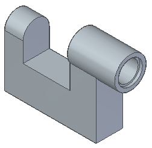
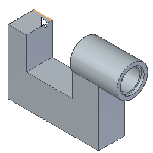
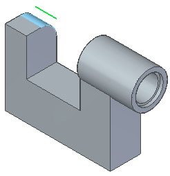
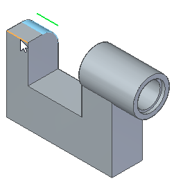
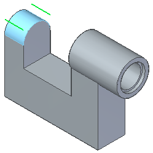
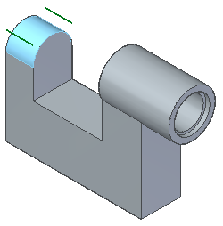

Round part edges

In the next few steps, use the Round command to round several edges on the part.
Choose the Home tab→Solids group→Round command .
On the Round command bar, in the Radius field, type 10.

Hover over the edge shown.

Click to place the first round.

Hover over the edge shown.

Click to place the second round.

Click Accept.

Click Preview, and then click Finish.
On the Quick Access toolbar, click the Save button  .
.
It is good practice to save the model regularly, but it can be easy to forget. Set an option to remind yourself to preserve open documents by saving them at user-defined time intervals.
-
On the File menu, choose the Settings tab→Options command.
The Solid Edge Options dialog box is displayed.
-
Click the Save tab, and then select the following options:
-
Automatically preserve documents by
-
Prompting me to save all documents every 60 minutes
-
-
Click Apply and close the dialog box.